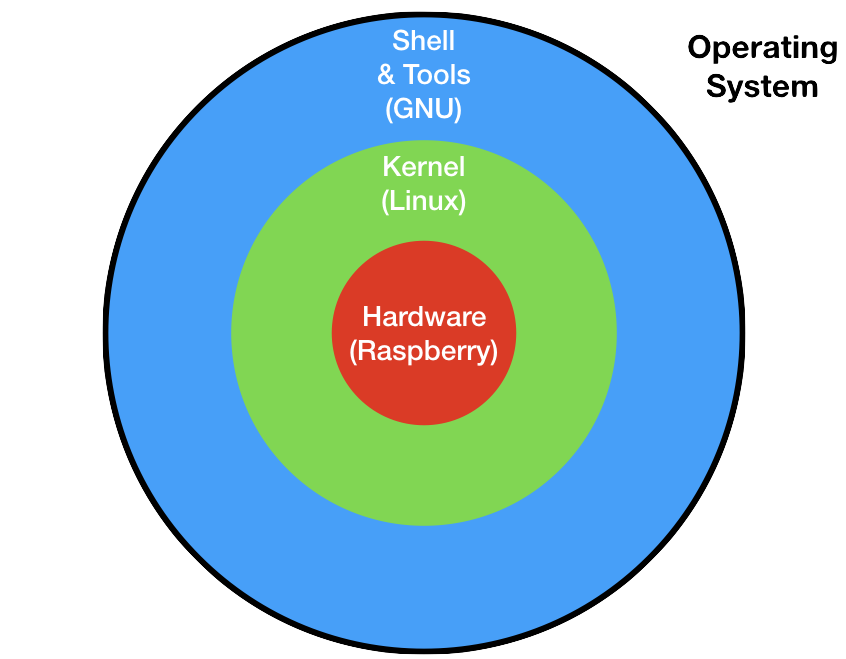
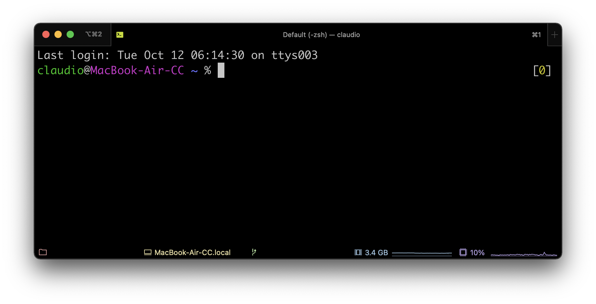

Basi di Linux
In questo capitolo vedremo le basi del sistema operativo Linux ed i comandi più importanti da utilizzare nella riga di comando.
Organizzazione di un sistema operativo
Il sistema operativo gestisce le risorse della macchina (memoria, processore, periferiche) per permettere a più applicazioni di poter funzionare contemporaneamente. Ma ogni cosa ha un suo costo: il sistema operativo utilizza per sé stesso una porzione a volte considerevole delle risorse stesse del nostro computer: pensiamo a quanti GB sul disco occupa una installazione di Windows o Mac, a quanta memoria occupa, e che ha volte i loro processi impegnano la CPU senza una ragione apparente. Oltre a questo pensiamo a problemi di vulnerabilità, aggiornamento, etc.
Se noi vogliamo far girare un solo programma sul computer, possiamo non aver bisogno di un sistema operativo. Tipicamente quest accade per piccoli elaboratori per compiti molto specifici: questo sistemi vengono chiamati embedded.
Il sistema operativo è una componente software molto complessa: per poter essere gestita in maniera ottimale, è stata divisa in sotto-componenti. Di seguito vediamo i principali.
Kernel
Per rappresentare i componenti del sistema operativo, si usa spesso la metafora delle sfere concentriche, in cui al centro di tutto c'è l'hardware.

Il programma che è più vicino all'hardware viene chiamato kernel. Noi ci occuperemo in particolare del kernel Linux, un kernel open-source.
Il kernel Linux è stato creato nel 1991 dal finlandese Linus Torvalds ed è distribuito attraverso la licenza di software libero GNU GPLv2. Questa licenza è stata ideata da Richard Stallman (dell'MIT di Boston) per tutelare il software "libero" (in inglese free software, in cui la parola free ha il significato di libero come in "free as in speech").
Il kernel si occupa di mediare l'accesso delle applicazioni alle risorse del computer:
- central processing unit (CPU)
- memoria volatile (RAM)
- periferiche di input/output (hard disk, tastiera, mouse, stampanti, etc.)
Il kernel è un programma come gli altri, non ha niente di "magico". In particolare il kernel è un insieme di librerie scritte principalmente in C/C++. Del kernel Linux possiamo anche vederne il codice sorgente, visto che è un software libero e quindi anche aperto.
Shell
Per usare direttamente il kernel dovremmo scrivere dei programmi in C/C++, ad esempio per interrogare l'hard-disk e farci restituire i file all'interno di una certa cartella. Scrivere un programma noi per ogni operazione che dobbiamo svolgere, ovviamente non è molto comodo.
Per poter usare in maniera le chiamate di sistema che ci mette a disposizione il kernel, ci sono una serie di strumenti che ci facilitano i compito. Per Linux, queste utilità sono state sviluppate dal progetto GNU, e si chiamano GNU coreutils.
Il progetto GNU è stato fondato nel 1983 da Richard Stallman, al MIT di Boston. GNU ha lo scopo in primo luogo di permettere agli sviluppatori di tutto il mondo di poter sviluppare liberamente software, ovvero avendo a disposizione il codice sorgente dei programmi di altre aziende che usano, e senza la necessità di pagare licenze. Le utilità che useremo in questo corso sono solo parte del progetto; un'altra parte fondamentale è la licenza che permette al software di essere usato legalmente, rispettando le libertà fondamentali del free software. Il nome di questa licenza è GPL (General Public Licence), di cui l'ultima versione è la GPLv3

Anche in questo caso possiamo andare a cercare il codice sorgente.
Terminale
Per poter interagire con la shell, abbiamo bisogno di un'applicazione specifica che ci permetta di farlo. Quest'applicazione si chiama "terminale".

Nell'immagine vedete l'applicazione "iTerm2", molto usata in ambito Apple come terminale.
Comandi
echo
Ritorna un'"eco" del suo argomento sul terminale.
$ echo ciao
ciao
touch
Crea un file o, se già esiste, ne aggiorna la data di ultima modifica.
$ touch ciao
cat
Abbreviazione di "concatenate", mostra il contenuto di un file.
$ cat ciao
Redirect
Il carattere > redirige l'output di un comando verso un file, invece del terminale. Se il file non esiste, viene creato. Se il file esiste, viene sovrascritto.
$ echo "buongiorno" > buongiorno.txt
Se si vuole aggiungere il testo alla fine del file senza sovrascriverlo, si può usare il >>.
$ echo "buongiorno" >> buongiorno.txt
$ cat buongiorno.txt
buongiorno
buongiorno
ls
Elenca i file nella cartella corrente
$ ls
buongiorno.txt ciao
L'opzione -l mostra i dettagli del file.
$ ls -l
total 8
-rw-r--r-- 1 claudio staff 11 Oct 12 07:03 buongiorno.txt
-rw-r--r-- 1 claudio staff 0 Oct 12 07:00 ciao
Aggiungendo anche l'opzione -h mostra i dettagli del file in un formato più leggibile per l'essere umano ("human"). Notare la B alla fine della quinta colonna, che sta per "Byte".
$ ls -lh
total 8
total 8
-rw-r--r-- 1 claudio staff 11B Oct 12 07:03 buongiorno.txt
-rw-r--r-- 1 claudio staff 0B Oct 12 07:00 ciao
Un'altra opzione utile è -a, per visualizzare anche i file nascosti. Su linux, un file è nascosto semplicemente se inizia con il carattere punto (.).
$ ls -lha
total 8
drwxr-xr-x 4 claudio staff 128B Oct 12 07:03 .
drwxr-xr-x 4 claudio staff 128B Oct 12 07:00 ..
-rw-r--r-- 1 claudio staff 11B Oct 12 07:03 buongiorno.txt
-rw-r--r-- 1 claudio staff 0B Oct 12 07:00 ciao
pwd
Abbreviazione di Print Working Directory, visualizza la directory corrente.
$ pwd
/Users/claudio/try/bash
mkdir
Abbreviazione di "make directory", crea una nuova cartella.
$ mkdir food
$ ls -l
-rw-r--r-- 1 claudio staff 22 Oct 12 07:12 buongiorno.txt
-rw-r--r-- 1 claudio staff 0 Oct 12 07:00 ciao
drwxr-xr-x 2 claudio staff 64 Oct 12 07:14 food
Si può capire che è una cartella perché il primo carattere nella riga di "food" è una d che sta appunto per "directory". I file hanno invece un trattino. Alcuni terminali mostrano le cartelle anche con un colore diverso.
cd
Abbreviazione di "change directory", permette di spostarsi tra cartelle.
$ cd food
$ pwd
/Users/claudio/try/bash/food
Usando cd senza argomenti, torno alla "home directory", che viene anche rappresentata con il simbolo ~ (si legge tilde).
$ cd
$ pwd
/Users/claudio/
$ cd ~ # comando equivalente al precedente
$ pwd
/Users/claudio/
Per tornare alla directory precedente, si può usare il simbolo - (trattino).
$ cd -
$ pwd
/Users/claudio/try/bash/food
Per salire di una directory si può usare il doppio punto.
$ cd ..
$ pwd
/Users/claudio/try/bash
cp
Copia un file, abbreviazione di copy.
$ cp ciao hello
$ ls
total 8
-rw-r--r-- 1 claudio staff 22 Oct 12 07:12 buongiorno.txt
-rw-r--r-- 1 claudio staff 0 Oct 12 07:00 ciao
drwxr-xr-x 2 claudio staff 64 Oct 12 07:14 food
-rw-r--r-- 1 claudio staff 0 Oct 12 07:20 hello
mv
Sposta un file da una cartella ad un'altra. Se la cartella di partenza e destinazione coincidono, semplicemente rinomina il file.
$ mv hello hola
$ ls
-rw-r--r-- 1 claudio staff 22 Oct 12 07:12 buongiorno.txt
-rw-r--r-- 1 claudio staff 0 Oct 12 07:00 ciao
drwxr-xr-x 2 claudio staff 64 Oct 12 07:14 food
-rw-r--r-- 1 claudio staff 0 Oct 12 07:20 hola
rm
Elimina un file, abbreviazione di remove.
$ rm hola
$ ls
-rw-r--r-- 1 claudio staff 22 Oct 12 07:12 buongiorno.txt
-rw-r--r-- 1 claudio staff 0 Oct 12 07:00 ciao
drwxr-xr-x 2 claudio staff 64 Oct 12 07:14 food
top
Visualizza i processi attualmente in esecuzione nella macchina.
$ top
Viene visualizzata una tabella a schermo intero. Per uscire, premere la combinazione di tasti ctrl-c
kill
Termina (uccide) un processo in esecuzione. Come argomento deve avere il numero del processo (PID - process ID) che viene visualizzato ad esempio con top.
$ kill 11459 # termina il processo con PID 11459
yes
Stampa su terminale una stringa all'infinito. Di default stampa 'y' ma si può personalizzare passandogli un argomento.
$ yes marconi
marconi
marconi
marconi
....
Anche in questo caso uscire con ctrl-c
/dev/null
Un file speciale all'interno del file system linux che è un pozzo senza fondo.
$ yes > /dev/null ## l'output di yes viene sostanzialmente scartato
ctrl-c
Termina (uccide) il processo corrente.
ctrl-z
Sospende il processo corrente. Per rimetterlo in esecuzione, si possono usare i comandi bg o fg
jobs
Visualizza i lavori in esecuzione. Un "lavoro" è un processo (o più precisamente può essere un insieme di processi) che è stato lanciato dalla shell corrente.
$ yes uno > /dev/null
# ctrl-z
suspended yes uno > /dev/null
$ yes due > /dev/null
# ctrl-z
suspended yes due > /dev/null
$ yes tre > /dev/null
# ctrl-z
suspended yes tre > /dev/null
$ jobs
[1] suspended yes uno > /dev/null
[2] - suspended yes due > /dev/null
[3] + suspended yes tre > /dev/null
Per riprendere un lavoro e portarlo in "foreground", ovvero accessibile dalla shell, si usa fg. Se uso fg senza argomenti, mette in foreground il lavoro contrassegnato dal +.
Per riprendere un lavoro e portarlo in "background", ovvero non accessibile dalla shell, si usa bg.
Per terminare un lavoro, posso usare sempre kill, ma l'argomento deve avere il simbolo %.
$ kill %2
[2] - terminated yes due > /dev/null
$ jobs
[1] - suspended yes uno > /dev/null
[3] + suspended yes tre > /dev/null
Variabili di ambiente
Ogni terminale usa delle variabili che sono definite automaticamente quando viene aperto. Queste variabili vengono dette variabili di ambiente. Per visualizzarle si può usare il comando env.
$ env
TERM_SESSION_ID=w1t0p0:3B371076-0F20-4C26-ACD4-4656F13F9AEA
SSH_AUTH_SOCK=/private/tmp/com.apple.launchd.P5eh4I2m5h/Listeners
LC_TERMINAL_VERSION=3.4.10
COLORFGBG=7;0
......continua.......
Per visualizzare una sola variabile, si può usare echo e la variabile deve essere preceduta dal carattere dollaro.
$ echo $SHELL
/bin/bash
Per assegnare una variabile, si può usare il comando export.
$ export PS1="test>"
Di seguito alcune variabili di ambiente che abbiamo visto:
- $TERM: quale standard rispetta l'applicazione terminale in uso, di solito è
xtermoxterm-256color - $SHELL: quale shell sto utilizzando, su Ubuntu di default è bash (quella sviluppata da GNU)
- $PS1: il prompt dei comandi, ovvero tutto quello che c'è prima del dollaro (dollaro compreso), solitamente include la directory corrente ed il nome utente
Premessa: concetti base di programmazione
Quando vogliamo imparare a programmare, in qualsiasi linguaggio, ci troviamo di fronte ad una pagina vuota.
Cosa dobbiamo fare? Cosa dobbiamo scrivere in questa pagina che ci si presenta davanti?
Quello che facciamo quando scriviamo un programma è qualcosa di fortemente creativo: non andremo solo a scrivere del codice che esegue istruzioni, ma andremo a creare un mondo nuovo, in cui ci potremo muovere ed agire con i concetti e le relazioni che avremo definito noi stessi.
Scrivere codice è come scrivere un romanzo o dipingere su una tela. Le nostre penne e pennelli sono tastiera e mouse, e la tela è lo schermo. Quello che andremo a realizzare però sarà qualcosa che non solo rappresenta la realtà, ma andrà anche ad interagire con essa, e in un medio periodo può anche modificarla ed a sua volta esserne modificato. In altre parole il codice è una cosa viva, in continua evoluzione, la cui capacità di replicazione e mutazione (soprattutto per il codice open-source) lo rende vicino per certi versi ad un essere vivente.
Un programmatore è un bravo osservatore
Un programmatore è un informatico ed il compito principale di un informatico è... risolvere problemi. Per poter risolvere un problema, però, bisogna prima capire qual è il problema, chi ha il problema e perché. Per poter fare questo, un programmatore deve essere un bravo osservatore della realtà. Più importante del QI o della genialità, è la capacità di saper osservare il mondo, ascoltare le persone, immedesimarsi negli altri e saper trasformare tutto questo in righe di codice che funzionino.
Tipi
Tutto comincia con i tipi.
Per dare una forma ed un senso a quello che ci circonda, dobbiamo poter assegnare a quello che ci percepiamo un nome che rappresenta una categoria, un insieme di proprietà e caratteristiche che accumunano un qualcosa ad altre cose che conosciamo già. Questo "nome comune" di cosa, persona o animale" che ci ricorda i nostri studi elementari e che ha posto le basi alla nostra comprensione della lingua parlata e scritte, si ripropone ora all'inizio dei nostri studi dei linguaggi di programmazione. Questi nomi in programmazione prendono il nome di tipi.
Tipi fondamentali
Esistono alcuni tipi che, più o meno universalmente, costituiscono i mattoncini base per tutti gli altri tipi nella programmazione. Questi tipi rappresentano delle caratteristiche base di ciò che ci circonda.
Guardiamoci intorno. Io adesso sono ne salotto di casa mia. Cosa vedo? Cosa sento? Cosa percepisco? Vedo una libreria con un certo numero di libri dentro. Sento una musica a basso volume. Sento un po' caldo. Vedo una tastiera con tanti caratteri scritti sopra, ed uno schermo con tante parole.
I tipi fondamentali sono:
- numeri interi: per rappresentare qualcosa che nella nostra descrizione del mondo non può essere diviso o non ci interessa che sia diviso. Ad esempio il numero di libri nella libreria.
- numeri decimali: per rappresentare qualcosa che ha un valore continuo e divisibile. Ad esempio il volume della musica, la temperatura della stanza.
- caratteri: per rappresentare un singolo carattere, numero o in generale simbolo. Ad esempio i singoli caratteri che vediamo sulla tastiera:
i,7,€, etc. - stringhe: per rappresentare una sequenza di caratteri. Ad esempio una stringa può essere una parola sullo schermo, o un'intera riga, o il titolo di un libro, etc.
- boolean: per cose che possono essere solo vere o false. Ad esempio se la luce è accesa o spenta.
- liste (o array): per rappresentare un insieme di cose. Ad esempio la lista di tutti i libri che si trovano nella libreria.
Di seguito un approfondimento su alcuni tipi sopra descritti.
Numeri interi
In matematica, i numero interi possono essere o naturali (zero e i numeri positivi: 0,1,2,3,... ) e relativi (numeri naturali più numeri negativi: ...,-3,-2,-1,0,1,2,3,...). Non c'è un limite inferiore o superiore al valore che un certo numero può assumere
In informatica, oltre a questo, dobbiamo fare i conti anche con le risorse finite della macchina su cui operiamo. Dobbiamo quindi sempre tener presente che un certo numero intero, occuperà in base alla sua grandezza un certo numero di byte in memoria. Il numero di byte che tipicamente può assumere un intero in memoria è: 1 byte, 2 byte, 4 byte o 8 byte. Un intero di 8 byte è sufficientemente enorme da rappresentare qualsiasi cosa, e di solito non ne servono di più.
Riassumendo, bisogna avere in mente due cose quando parliamo di interi:
- se il numero sarà sicuramente sempre positivo, o ha senso che possa essere negativo
- quant'è il valore massimo o minimo che nella pratica il numero può avere, che determina il numero di byte da riservare in memoria.
In C/C++, il segno e la grandezza si dichiara esplicitamente. In Python, i numeri interi sono sempre con il segno ed il compilatore assegna automaticamente il numero di byte in base al valore.
Numeri decimali
I numeri decimali sono quelli con la virgola, e vengono detti anche numeri a virgola mobile, o floating point numbers.
I numeri decimali in informatica sono sempre con il segno. Anche in questo caso dobbiamo però decidere il numero di byte che occupa in memoria. Il numero di byte che può assumere un numero decimale è: 4 byte o 8 byte. Anche in questo caso, un numero decimale di 8 byte può rappresentare bene praticamente qualsiasi cosa che conosciamo, e non servono più byte.
Nei processori a 64bit, la dimensione tipica dei numeri decimali è sempre 8 byte, che vengono detti anche double precision floating point numbers, o semplicemente double. Nei processori a 8, 16 o 32 bit, per motivi di performance di solito si assegnano 4 byte e solo in caso di necessità se ne assegnano 8.
Come per gli interi, in C/C++ bisogna dichiarare esplicitamente se un float occupa 4 o 8 byte. In Python occupa sempre 8 byte.
Caratteri e stringhe
Per la rappresentazione dei caratteri bisogna fare più attenzione rispetto a quella degli interi perché esistono tanti standard diversi che co-esistono tra di loro. Semplificando, attualmente esistono due standard principali:
- ASCII: rappresenta i caratteri inglesi (senza accenti o altri segni diacritici), i numeri e alcuni simboli base come
@,!,#,5e simili. Usa un byte di memoria e viene utilizzato in casi particolari o in vecchi sistemi - UTF-8: rappresenta i caratteri di tutte le lingue (italiano, spagnolo, cinese, indiano, sanscrito, greco antico, etc), i segni matematici, le emoji e tanti altri simboli. Usa un numero variabile di byte: per i caratteri più comuni (essenzialmente quelli ASCII) usa un solo byte, in tutti gli altri casi usa due byte. Alcuni esempi di caratteri UTF-8 sono:,
Ẽ,≢,©,∂,🌷, etc.
Nel linguaggio C, per rappresentare un singolo carattere si usa il singolo apice, ad esempio 'k' è il singolo carattere k; per rappresentare le stringhe si usa il doppio apice, ad esempio "hello" è la stringa hello. In C l'espressione 'hello' ritorna un errore.
In Python, non si può rappresentare un singolo carattere, ma esistono solo stringhe. Per rappresentare le stringhe, si può usare sia indifferentemente sia il singolo che il doppio apice, quindi le espressioni "hello" ed 'hello' sono equivalenti.
Come scegliere tra singolo e doppio apice? Dipende se all'interno della stringa che vogliamo rappresentare, ci sono degli apici. Se ci sono dei singoli apici all'interno, conviene usare i doppi apici per le stringhe, in modo che la stringa
"l'alba è meravigliosa"sia valida. Se invece all'interno della stringa abbiamo doppi apici, conviene usare esternamente i singoli apici, in modo che ad esempio'"Python" è bello'sia una stringa valida. Se all'interno della nostra stringa ci sono sia singoli che doppi apici, dobbiamo usare il carattere di escape\'e\"; ad esempio possiamo scrivere'l\'alba è "meravigliosa"oppure `"l'alba è "meravigliosa"'. In caso di incertezza comunque, lo standard è utilizzare il singolo apice.
In Python esistono anche altri modi di rappresentare le stringhe, lo vedremo più avanti.
Boolean
Come abbiamo detto, un boolean rappresenta qualcosa che può essere o solo vero o solo falso. Una variabile boolean può essere assegnata in uno dei seguenti modi:
- direttamente a vero o falso, ad esempio
a = True - come risultato di una operazione logica, ad esempio
a = 3 > 2
Attenzione a non abusare del tipo boolean: usarlo solo quando concettualmente nel nostro mondo non possono esserci altri valori o valori intermedi. Ad esempio immaginiamo che nel nostro mondo ci sono sedie rosse e gialle. Mettere una variabile boolean del tipo is_red, che mi dice se la sedia è rossa, è una pessima idea. Primo perché non è chiaro cosa succede quando il valore è falso e secondo perché se domani arrivano delle sedie blu, devo cambiare tutto il codice :(
Uno dei punti su cui variano molto i diversi linguaggi è come e se convertire altri tipi in boolean. Ad esempio, posso considerare il valore
0come falso, ed1come vero? Posso dire che una lista vuota è falsa, ed una lista non vuota è vera? Oppure che una stringa vuota è falsa, ed una stringa non vuota è vera? Questo in informatica viene detto "Truthy and Falsy" del linguaggio. Per sapere cosa è vero e falso in Python leggete qui, in C++ leggete qui.
Liste (o array)
In quanto esseri umani, una delle cose fondamentali che facciamo continuamente è raggruppare insieme le intorno a noi che abbiano una qualche caratteristica in comune. Potrebbero essere un insieme di libri che si trovano sullo stesso scaffale, o tutta la frutta che abbiamo in casa, o gli articoli che si trovano nel magazzino. Questi insiemi sono rappresentati nei diversi linguaggi di programmazione in modo molto vario e con diversi nomi, ma quasi sempre sono un tipo base del linguaggio stesso.
Nonostante le diversità, una caratteristica comune di tutti i linguaggi è che per definire e manipolare le liste si usano le parentesi quadre []. Ad esempio, una lista di nomi si può definire come names = ["John","Mario",Akira"], e per leggere un elemento di una lista si usa ad esempio names[1].
Attenzione: per convenzione, quasi tutti i linguaggi, inclusi C e Python, cominciano a contare da 0, mentre noi nella vita quotidiana cominciamo da 1. Nella pratica dell'informatica quindi, se una lista ha 3 elementi, il primo elemento della lista è l'elemento 0, e l'ultimo è l'elemento 2. Vedremo degli esempi in seguito.
Una nota sulla nomenclatura: il tipo base di lista in C si chiama array, mentre in Python si chiama list. Tecnicamente tra liste e array ci sono delle differenze, ma quello che interessa a noi in questo momento è che in tutti i linguaggi esistono dei tipi base per rappresentare un insieme di oggetti con delle caratteristiche in comune.
Approfondimento: tipi statici, dinamici, deboli e forti
La caratteristica che probabilmente differenzia maggiormente i vari linguaggi di programmazione tra di loro, è come il linguaggio gestisce i tipi. Ci sono due assi su cui ci si può muovere:
- static vs dynamic
- weak vs strong
L'argomento è molto interessante ma anche altrettanto complesso, e richiede una buona conoscenza di come funziona la gestione della memoria, sia durante la compilazione che a runtime.
Questo piccolo paragrafo è solo per mettervi un po' di curiosità e farvi capire che l'oceano è grande :) Ne parleremo in modo più approfondito l'anno prossimo :D
Python
Il linguaggio che vedremo quest'anno è Python. Python è un linguaggio completamente open-source, il codice sorgente è reperibile sulla pagina ufficiale di GitHub ed è rilasciato sotto la Python License.


Python è stato creato alla fine degli anni '80 dall'olandese Guido van Rossum, all'età di circa trent'anni. Come molti colleghi nell'ambito informatico, il suo operato è stato costantemente guidato da alcuni ideali, in particolare van Rossum credeva che la programmazione dovesse essere accessibile a tutti; le sue scelte per la sintassi del linguaggio hanno avuto sempre questa direzione. Nel 1999 sono state pubblicate delle linee guida che riassumevano questi concetti, conosciute come "The Zen of Python".
È anche possibile leggere queste linee guida direttamente dentro Python, scrivendo
import this:)
Se volete provare gli snippet di codice in questa pagina, potete usare il playground online di SoloLearn.
Caratteristiche
Python ha una sintassi essenziale, eliminando quasi tutta la punteggiatura.
Esempio di un programma Python completo e valido:
catalogue = ["Harry Potter e il calice di fuoco", "Il rosso e il nero", "Il piccolo principe"]
for title in catalogue:
print(title)
print("goodbye")
Nella prima riga, viene dichiarata una nuova variabile catalogue. Il tipo della variabile viene inferito dal valore assegnato; in questo caso, siccome assegniamo qualcosa che è tra parentesi quadre, il tipo di catalogue è una lista. Fate attenzione: la riga non finisce con il punto e virgola!
Nella seconda riga c'è un ciclo for. Notate che non ci sono parentesi di nessun tipo, né tonde né graffe; attenzione però che la riga in questo caso finisce con i due punti Le stesse regole valgono anche per il condizionale if.
Ma se non ci sono parentesi graffe, come si fa a sapere dove finisce il contenuto del ciclo for? Qui c'è la scelta un po' azzardata di van Rossum: usare l'indentazione del codice per definire dove finiscono i blocchi, ed obbligare lo sviluppatore ad usare le buone pratiche di indentazione. Una scelta che con il tempo tutto sommato ha ripagato!
Quindi vediamo che il contenuto del for è solo print(title), mentre la riga successiva, la quarta, è fuori dal ciclo.
Se eseguiamo il codice, avremo il seguente output su console:
Harry Potter e il calice di fuoco
Il rosso e il nero
Il piccolo principe
goodbye
Importare una libreria esterna
Se ci servono delle librerie esterne per fare delle operazioni particolari, su usano le keyword import e from. Ad esempio immaginiamo di voler stampare la data e l'ora attuali.
from datetime import datetime
print(datetime.now())
che avrà come output il giorno e l'ora attuali, ad esempio:
2019-11-29 21:57:27.676783
In generale, dopo il from ci va il nome di un file Python (senza estensione), e dopo import il nome di una variabile. In questo esempio, nella prima riga importiamo la variabile datetime da un file che si chiama con lo stesso nome. Il file datetime nel caso specifico non è creato da noi ma è una libreria di sistema, ma possiamo usare la stessa sintassi anche per i nostri file.
Librerie aggiuntive
Solo le librerie esterne più comuni, come datetime, sono già pre-installate in Python. Esistono infatti decine di migliaia di librerie, in continuo cambiamento, scaricarle tutte all'inizio sarebbe impossibile oltre che inutile!
Fortunatamente esiste un semplice comando per scaricare ed installare nuove librerie. Aprire un terminale sul proprio computer (anche all'interno di Visual Studio Code), e scrivere:
pip3 install <nome-libreria>
Vediamo che pip3 è un comando che gestisce i pacchetti Python (Pip sta per "Pip installs package", è un acronimo ricorsivo), e <nome-libreria> è il nome della libreria che vogliamo scaricare.
Riferimenti W3Schools
Il sito w3schools è un buon riferimento per imparare il Python. Consigliamo in particolare le seguenti pagine:
A breve ci serviranno anche i seguenti concetti:
Come usare Python
Usare Python sul server della scuola
Per gli studenti del Marconi, è possibile esercitarsi con Python senza installare nulla collegandosi direttamente al server della scuola.
Collegatevi via SSH o con l'estensione Remote SSH al server ed usate il comando python3 per eseguire il vostro codice Python.
Usare Python con Visual Studio Code sul proprio computer
1. Installare Python
Per installare Python su Visual Studio Code, questa è la guida ufficiale. Riepiloghiamo in breve qui i passaggi.
Andare sul sito Python downloads e scaricare l'ultima versione di Python premendo il bottoncione giallo grande con scritto "Download Python".
Quando lo avviate, vedrete una schermata di questo genere (la versione di Python potrebbe cambiare):

Attenzione: selezionate l'ultima spunta in basso "Add Python to PATH" per poter usare i comandi Python anche da terminale.
Seguite le istruzioni fino in fondo, e se necessario riavviate Visual Studio Code.
2. Installare l'estensione per Visual Studio Code
Aprite Visual Studio Code ed installate l'estensione Python di Microsoft.

Una volta installata, quando aprirete un file con estensione .py vi comparirà nella barra blu in basso la possibilità di selezionare l'interprete Python. Selezionate l'ultima versione che avete appena installato.

Gioco del Tris
Usiamo come caso di studio il gioco del tris (Tic Tac Toe, in inglese).
Creazione della board di gioco
Il tabellone di gioco (board) del tris è formato da 3 righe e 3 colonne. Possiamo rappresentarlo con una matrice 3x3.
In Python possiamo creare una matrice così:
board = [
['-','-','-'],
['-','-','-'],
['-','-','-']
]
Come vedete, nella dichiarazione della variabile non è necessario specificare la dimensione, perché viene automaticamente inferita dal valore assegnato.
Per stampare a schermo lo stato del tabellone, possiamo scrivere un doppio ciclo che va da uno a tre:
for i in range(3):
for j in range(3):
print(board[i][j], end=" ")
print()
La funzione range(n) permette di iterare tra ed 0 e n-1; in questo caso quindi i e j assumeranno i valori da 0 a 2.
range(n)può essere usato per iterare in molti altri modi, vedi qui per maggiori dettagli.
Mettiamo questo doppio ciclo all'interno di una funzione, in modo da poterlo richiamare quando ci è necessario.
# definisco la funzione
def mostra_tabellone():
for i in range(3):
for j in range(3):
print(board[i][j], end=" ")
print()
# richiamo la funzione
mostra_tabellone()
Notare come tutto quello che appartiene alla funzione è indentato al suo interno, mentre ciò che non ne fa parte non ha nessuna indentazione.
Ricordiamo anche che è buona norma che le funzioni comincino con un verbo, in quanto rappresentano delle azioni.
Richiesta di un valore in input
Per chiedere un valore in modo interattivo in input all'utente, si può usare la funzione input().
Ad esempio per chiedere la riga in cui inserire il proprio segno nel tabellone, potremmo scrivere:
r = input("Inserisci la riga (valori da 0 a 2): ")
Attenzione però: la funzione input() ritorna una stringa, mentre noi vorremmo avere un intero. Per convertire da stringa ad intero, possiamo usare la funzione int():
r = int(input("Inserisci la riga (valori da 0 a 2): "))
Analogamente per la colonna. Complessivamente:
r = int(input("Inserisci la riga (valori da 0 a 2): "))
c = int(input("Inserisici la colonna (valori da 0 a 2): "))
Inserire i simboli nel tabellone
Per inserire il simbolo di un giocatore è sufficiente assegnare il carattere nel giusto elemento della variabile tabellone:
board[r][c] = symbol
Vogliamo ripetere questa operazione finché il tabellone non è pieno oppure finché qualcuno non ha vinto. Creiamo un ciclo viene essere eseguito 9 volte.
for idx in range(9):
mostra_tabellone()
r = int(input("Inserisci la riga (valori da 0 a 2): "))
c = int(input("Inserisici la colonna (valori da 0 a 2): "))
# aggiungere anche condizione che r,c devono essere compresi tra 0 e 2
if board[r][c]=='-':
board[r][c] = 'O'
In questo modo però stiamo assegnando sempre il simbolo 'O' , che ovviamente non è quello che vogliamo: vogliamo alternare i simboli 'X' e 'O'. Possiamo fare in modo che per idx pari mettiamo un simbolo, e per i dispari l'altro. Per fare questo possiamo creare una lista con i due simboli, ed assegnare il simbolo in base all'indice, come di seguito.
symList = ['X','O']
for idx in range(9):
symbol = symList[idx%2]
mostra_tabellone()
print("Il tuo simbolo è: "+symbol)
r = int(input("Inserisci la riga (valori da 0 a 2): "))
c = int(input("Inserisici la colonna (valori da 0 a 2): "))
# aggiungere anche condizione che r,c devono essere compresi tra 0 e 2
if board[r][c]=='-':
board[r][c] = symbol
Abbiamo utilizzato l'operatore modulo (%), che ritorna il resto di una divisione; siccome stiamo dividendo per due, il resto potrà essere solamente 0 o 1, quindi non potrà mai succedere che esco fuori dall'array symList che ha esattamente due elementi.
Con questa soluzione riusciamo ad evitare di inserire un if. In generale è una buona regola di programmazione ridurre il numero di condizioni, sia perché di solito facilita la lettura (le condizioni sono spesso faticose da interpretare), sia perché il codice è più facile da testare. Ovviamente è solo un suggerimento da usare in base al proprio giudizio, non un obbligo.
Controllo dei valori di ingresso
È importante controllare sempre i valori di ingresso forniti dall'utente, per rendere il codice più robusto.
Per fare questo, ci serve un ciclo che chiede all'infinito i valori di input finché questi non sono corretti. Per uscire da un ciclo si usa la parola chiave break.
# while True esegue un ciclo infinito
while True:
r = int(input("Inserisci la riga (valori da 0 a 2): "))
c = int(input("Inserisici la colonna (valori da 0 a 2): "))
# aggiungere anche condizione che r,c devono essere compresi tra 0 e 2
if board[r][c]=='-':
board[r][c] = symbol
# break esce dal ciclo
break
Controllo della condizione di vittoria
Creiamo una funzione che controlla se qualcuno ha vinto.
Vogliamo creare una funzione che ritorni False nel caso in cui nessuno ha vinto, altrimenti il simbolo del vincitore.
Esistono diversi modi per realizzare questa funzione. Qui ne presento una, ma ce ne sono molte altre altrettanto valide, anche senza usare cicli for.
def win(board):
# ripete il controllo per ogni giocatore
for sym in symList:
# controlla se ci sono 3 simboli uguali in una riga
for i in range(3):
if board[i].count(sym)==3:
return sym
# controlla se ci sono 3 simboli uguali in una colonna
for i in range(3):
if (board[0][i]==sym and
board[1][i]==sym and
board[2][i]==sym):
return sym
# controlla le due diagonali
if (board[0][0]==sym and
board[1][1]==sym and
board[2][2]==sym):
return sym
if (board[0][2]==sym and
board[1][1]==sym and
board[2][0]==sym):
return sym
return False
Codice finale
#!/usr/bin/env python3
print("Gioco del tic tac toe")
board = [
['-','-','-'],
['-','-','-'],
['-','-','-']
]
symList = ['X','O']
def mostra_tabellone():
for i in range(3):
for j in range(3):
print(board[i][j], end=" ")
print()
def win(board):
for sym in symList:
#check rows
for i in range(3):
if board[i].count(sym)==3:
return sym
#check columns
for i in range(3):
if (board[0][i]==sym and
board[1][i]==sym and
board[2][i]==sym):
return sym
# check diagonals
if (board[0][0]==sym and
board[1][1]==sym and
board[2][2]==sym):
return sym
if (board[0][2]==sym and
board[1][1]==sym and
board[2][0]==sym):
return sym
return False
winner=False
for idx in range(9):
symbol = symList[idx%2]
mostra_tabellone()
print("Il tuo simbolo è: "+symbol)
while True:
r = int(input("Inserisci la riga (valori da 0 a 2): "))
c = int(input("Inserisici la colonna (valori da 0 a 2): "))
# aggiungere anche condizione che r,c devono essere compresi tra 0 e 2
if board[r][c]=='-':
board[r][c] = symbol
break
winner=win()
if winner:
break
mostra_tabellone()
print("The winner is... "+winner+"!")
Test del gioco
Prima di andare avanti, è bene creare dei "test" che ci permettano di assicurarci che, qualsiasi modifica faremo in futuro al nostro codice, le funzionalità continueranno sempre ad essere corrette.
I test sono uno degli strumenti più importanti nella cassetta degli sviluppatori per poter scrivere del buon codice .
Creazione del file di test
Creiamo un nuovo file chiamato test_tris.py. In generale si usa la convenzione che il file di test ha lo stesso nome del file che deve testare, con il prefisso test_.
Come prima riga, importiamo la funzione che vogliamo testare.
from tris import win
Ricordiamo che dopo il from mettiamo il nome del file, senza .py, e dopo import i nomi delle funzioni o delle variabili che vogliamo importare.
Ora creiamo una funzione di test. Ogni funzione deve avere al suo interno l'istruzione assert con la condizione che si vuole verificare sia vera.
def test_win_1():
board = [
['X','X','X'],
['-','O','O'],
['-','-','-']
]
assert win(board) == 'X'
Se la verifica van a buon fine, la funzione assert non ritorna nulla; in caso contrario invece stampa un messaggio di errore.
Alla fine del file dobbiamo ricordarci di chiamare le funzioni di test.
# definisco tutte le funzioni...
test_win_1()
# ...chiamo tutte le funzioni di test...
Quanti test devo effettuare?
"Un programmatore entra in un pub ed ordina una birra, 2 birre, 10 birre, 1000 birre, 0 birre, -1 birra, asdasdqwe birre."
Questa è una "freddura" nerd che fa capire come dovrebbero essere progettati i test. Bisogna verificare sia tutte le condizioni "normali", che ci si aspetta dall'utente o dal regolare funzionamento del programma, sia cercare di immaginarsi tutte le cose che potrebbero andare storte.
Nel nostro caso dobbiamo prevedere:
- 8 test per la vittoria di 'X' (3 righe, 3 colonne, 2 diagonali)
- 8 test per la vittoria di 'O'
- un certo numero di test per le situazioni di non vittoria (il gioco continua)
Adattamento del file app.py
Quando importiamo la funzione win, l'interprete di Python esegue tutto il file "tris.py", compresa la parte finale in cui chiede l'input dei giocatori. Non è però quello che vogliamo quando importiamo un file come libreria.
Per risolvere questo problema, Python mette a disposizione la variabile di ambiente __name__ che assume un valore diverso in base a come è invocato il file. Per variabile di ambiente si intende una variabile che non è creata o assegnata direttamente da noi, ma è gestita dall'interprete o dal sistema operativo. In Python queste variabili hanno sempre un doppio trattino basso come prefisso e per questo sono anche chiamate dunder variables (abbreviazione di double under score variables), oppure magic variables.
In particolare, la variabile __name__ assume il valore:
- la stringa
"__main__"se il file è chiamato direttamente - il nome del modulo in cui si trova, che di default è uguale al nome del file
In altre parole, per non eseguire del codice quando il file viene importato come libreria, dobbiamo aggiungere la condizione:
if __name__ == "__main__":
# codice da eseguire solo quando il file è chiamato direttamente da riga di comando (python3 tris.py)
Versione del codice con test
Potete trovare la versione completa del codice qui.
Web
Nel 1989 al CERN di Ginevra, in Svizzera, un laureato in fisica con la borsa di studio trovava estremamente frustrante dover andare a cercare le informazioni che gli servivano per le sue ricerche sui vari computer dell'istituto, il più grande del mondo per la fisica delle particelle. Questo ricercatore si immaginava di avere una pagina con delle parole cliccabili che rimandavano a delle risorse o ad altre pagine: sarebbe stato comodissimo! Il ricercatore si chiamava Tim Berners-Lee.

Tim diede a queste pagine immaginarie il nome di ipertesto (HyperText). Scrisse un articolo su questa idea, ed il suo capo gli permise di lavorarci per un piccolo progetto collaterale. È nato in questo modo, quasi per caso, il World Wide Web che conosciamo oggi, chiamato anche più semplicemente il Web.
Web in inglese significa propriamente ragnatela, mentre rete si traduce con net. Tuttavia, di solito Web si traduce in italiano con il termine più generico di rete.
Gli ingredienti che Tim Berners-Lee ha inventato e messo a punto per il suo progetto sono:
- un linguaggio per scrivere le pagine web, utilizzando dei marcatori, che ha chiamato HyperText Markup Language (HTML, in italiano si potrebbe tradurre con "linguaggio con marcatori per ipertesti");
- un modo per identificare in maniera univoca una risorsa, che ha chiamato Uniform Resource Locator (URL);
- un protocollo per trasmettere gli ipertesti, che ha chiamato HyperText Transfer Protocol (HTTP)
Tutte queste cose nel tempo sono diventate uno standard e le impareremo a conoscere nel dettaglio.
L'associazione che si occupa di standardizzare tutti gli aspetti del web si chiama World Wide Web Consortium, abbreviato con w3c. Il w3c è stato fondato da Tim Berners-Lee, che ne è ancora il presidente.
Modello client-server
Prima di passare a vedere nel dettaglio le tecnologie web, vediamo il paradigma su cui si basa il web stesso: il modello client-server.
Nel web, si distinguono nettamente due diverse macchine:
- il client, che invia la richiesta e visualizza una pagina web
- il server, che riceve le richieste e fornisce le pagine web da visualizzare

Client
Il client è una qualsiasi macchina che visualizza le pagine web, ad esempio:
- un computer desktop
- uno smartphone
- uno smartwatch
- una smartTV
- ...
Il programma che visualizza le pagine web viene normalmente chiamato browser.
Esistono tanti browser differenti, ma quasi tutti sono delle varianti di questi tre:
- Chrome/Chromium, da cui deriva ad esempio Edge e Safari
- Firefox
- Opera
Nel browser possiamo usare solo HTML, CSS e JavaScript per le nostre pagine.
Server
Il server ha il compito di gestire le richieste dei client.
Client e server, nel mondo web, comunicano tramite il protocollo HTTP. L'applicazione software all'interno del server che ha il compito specifico di riceve le chiamate HTTP, passarle ad un'altra applicazione, ricevere la risposta da questa applicazione e ritornare una risposta HTTP al client viene chiamata web server. Ad esempio, un web server molto comune in Python è Flask.
Sul server abbiamo una maggiore libertà di scelta delle tecnologie da usare rispetto al client. Possiamo usare una vasta gamma di linguaggi di programmazione tra cui PHP, Java, Python, C++, Rust, etc.
URL
L'URL (Uniform Resource Locator) è uno dei mattoncini base del web e serve per identificare in maniera univoca una risorsa all'interno del web stesso. Volendo fare un paragone, è l'equivalente dell'IP per Internet.
Una risorsa può essere teoricamente qualsiasi cosa, ma tipicamente è una delle seguenti:
- una pagina web (.html)
- un file (es. immagine, audio)
- una risorsa all'interno di un database
Sintassi
Un URL ha la seguente sintassi:
protocol://host/path?query#fragment
Vediamo di seguito in dettaglio ogni parte.
Protocol
I protocolli che usiamo solitamente sono:
- http (porta 80, da usare con cautela perché non sicuro)
- https (porta 443)
Altri protocolli molto usati sono:
- ftp per trasferire i file (porta 21)
- ssh per aprire una sessione remota (porta 22)
Host
L'host è la macchina su cui si trova la risorsa. Può essere:
- un indirizzo IP (IPv4 o IPv6)
- un nome di dominio (es. www.google.com)
Per maggiori informazioni su come viene mappato un indirizzo IP ad un nome di dominio, rimando a questa pagina.
Path
Il path (percorso) individua la risorsa all'interno dell'host. Può essere il path di un file all'interno della macchina, oppure un percorso generico che viene instradato (routed) dal web server verso una specifica funzione che si occuperà di gestire la richiesta.
Query
La query (interrogazione) serve per specificare meglio la risorsa richiesta.
Ad esempio, se la risorsa è la lista dei prodotto di abbigliamento di un certo ecommerce, attraverso una query posso chiedere di visualizzare solo i prodotti con un certo prezzo, o solo i primi 10 prodotti, etc.
Fragment
Un fragment (frammento) individua una porzione della risorsa restituita.
Per le pagine web, ad esempio, ogni id crea un nuovo fragment. Posso quindi saltare ad un certo punto di una pagina specificando l'id al termine dell'URL, come in questo caso.
HTTP
L'HTTP (HyperText Transfer Protocol) è il principale protocollo a livello applicativo (livello 7 ISO/OSI) che si usa per il web. Le specifiche sono gestite direttamente dal w3c.
L'HTTP si fonda su un'architettura di tipo client-server. Il client per definizione è la macchina che effettua la richiesta, mentre il server è la macchina che gestisce la richiesta e fornisce una risposta.
Una stessa macchina, in momenti diversi, si può comportare sia da client che da server.
Il protocollo HTTP prevede quindi due messaggi: la richiesta (request, da client a server) e la risposta (response, da server a client).
L'HTTP di default comunica attraverso la porta 80. Quando usiamo un browser senza specificare la porta, il browser stesso aggiunge automaticamente questa porta di default per noi.
Versione sicura
L'HTTP trasmette l'intestazione ed il corpo del messaggio in chiaro, cioè in modo non criptato, ponendo dei problemi sia di sicurezza quando si scambiano delle credenziali, sia di privacy, in quanto un qualsiasi utente che si pone in ascolto del nostro traffico (detto anche man-in-the-middle) ha libero accesso al conenuto di tutti i messaggi inviati e ricevuti.
Per ovviare a questo problema, è nato il protocollo HTTPS (HTTP Secure), che utilizza un layer di cifratura di tipo SSL/TLS per criptare la comunicazione.
NOTA: l'HTTPS nasconde il contenuto del messaggio (intestazione e corpo), ma il destinatario (IP o nome di dominio), quindi un man-in-the-middle può comunque sapere verso quali siti stiamo navigando. Per aumentare la privacy, è in fase di fase di approvazione il protocollo DNS over HTTPS (abbreviato in DoH) per criptare anche la comunicazione tra il browser ed il server DNS.
L'HTTPs di default comunica attraverso la porta 443.
Sessioni e cookies
L'HTTP è un protocollo senza stato ("stateless"), cioé a livello di protocollo ogni richiesta è del tutto indipendente dalla precedente. Come può fare quindi il server a sapere che più richieste provengono dalla stessa macchina, ad esempio per mantenere lo stato del carrello? In altre parole, come fanno client e server a mantenere una sessione persistente tra più messaggi HTTP?
Per fare questo, si utilizza in generale la strategia dei cookies (biscotti). Client e server concordano una stringa casuale che verrà trasmessa nell'header di tutte le richieste HTTP, in modo che il server possa tenere traccia delle varie richieste.
Ovviamente, se qualcuno venisse a conoscenza dei nostri cookies, li potrebbe utilizzare per violare la nostra privacy o per truffarci. È quindi importante che i cookies siano adeguatamente protetti in tutta lo loro vita:
- il browser deve assicurare che solo il sito che ha generato il cookie può accederci e nessun altro
- deve essere usato il protocollo HTTPS, per criptare l'intestazione della richiesta che contiene il cookie stesso
Request
Una richiesta HTTP è formata da:
- una linea di richiesta (request line), dove viene specificato il metodo, l'URL di destinazione ed il protocollo richiesto (in genere HTTP/1.1)
GET /image/logo.png HTTP/1.1
In questo esempio, nella linea di richiesta ho solo la parte dell'URL che segue il dominio, in quanto l'host viene specificato successivamente nell'intestazione.
- un'intestazione (header), formata da una serie di campi (fields), con la sintassi
nome:valore
Host:www.example.com
Accept-language:en
- opzionalmente il corpo del messaggio (message body)
Metodi HTTP
I metodi HTTP sono una parte fondamentale del protocollo, indicano l'azione desiderata del client riguardo la risorsa specificata nell'URL.
Questo argomento merita una pagina a parte, trovate tutti i dettagli qui.
Request header fields
I più comuni campi dell'intestazione della richiesta sono:
Host: l'unico campo obbligatorio da HTTP/1.1, con l'IP o il dominio che identifica il server di destinazioneUser-agent: specifica il browser utilizzato dal client, ad esempio nel mio caso èMozilla/5.0 (Macintosh; Intel Mac OS X 10_15_7) AppleWebKit/537.36 (KHTML, like Gecko) Chrome/101.0.4951.64 Safari/537.36Accept-language: specifica in quale lingua il client si aspetta la rispostaCookie: una stringa che identifica il cookie per mantenere lo stato tra client e server, come abbiamo visto in precedenza
Per una lista completa, potete consultare il sito ufficiale del w3c oppure su wikipedia.
Response
Una risposta HTTP è formata da:
- una linea di stato (status line), che contiene la versione del protocollo di risposta, lo status code e opzionalmente una frase di risposta:
HTTP/1.1 200 OK
- un'intestazione (header), formata da una serie di campi (fields), con la sintassi
nome:valore, come nel caso della richiesta
Content-Type: text/html
Nota: i campi delle intestazioni di richiesta e risposta non sono tutti uguali, alcuni sono validi solo per le domande, alcuni solo per le risposte, alcuni per entrambi.
- opzionalmente il corpo del messaggio (message body)
Request header fields
I più comuni campi dell'intestazione della richiesta sono:
Date: specifica la data della rispostaContent-Lenght: specifica la dimensione in byte del bodyContent-Type: specifica il Media-Type del body, i più comuni sono:text/htmlper le pagine HTMLapplication/jsonper i messaggi JSONapplication/pdfper un file PDFimage/pngoimage/jpegper le immaginivideo/mp4evideo/oggper i videoaudio/mpegeaudio/oggper l'audio
La lista completa dei possibili Media-Type la trovate qui.
Status codes
Il dato più importante in una risposta HTTP è il codice di stato (status code), che identifica se la richiesta è andata a buon fine ed in caso negativo qual è stato il problema.
I codici di stato sono divisi in 5 categorie:
- 1xx informational – richiesta ricevuta, continua l'elaborazione.
- 2xx successful – l'azione è stata ricevuta con successo, compresa ed accettata.
- 3xx redirection – il client deve eseguire ulteriori azioni per soddisfare la richiesta.
- 4xx client error – la richiesta è sintatticamente scorretta o non può essere soddisfatta.
- 5xx server error – il server ha fallito nel soddisfare una richiesta apparentemente valida.
Per una lista completa degli status codes, vi consiglio di consultare la pagina ufficiale di MDN Web Docs.
Di seguito alcuni dei codici più comuni che abbiamo visto a lezione.
2xx successful
200: OK. Risposta standard per le richieste HTTP andate a buon fine.
201: Created. La richiesta è stata soddisfatta, restituendo la creazione di una nuova risorsa.
4xx client error
400: Bad Request. La richiesta non può essere soddisfatta a causa di errori di sintassi.
403: Forbidden. La richiesta è legittima ma il server si rifiuta di soddisfarla.
404:Not Found. La risorsa richiesta non è stata trovata ma in futuro potrebbe essere disponibile.
429: Too many requests. Il client ha effettuato troppe richieste in un intervallo di tempo ridotto.
5xx server error
500: Internal Server Error. Messaggio di errore generico senza alcun dettaglio.
501: Not Implemented. Il server non è in grado di soddisfare il metodo della richiesta.
504: Gateway Timeout. Il server si sta comportando come un gateway o un proxy e non ha ricevuto una risposta tempestiva dal server di upstream.
Metodi HTTP ed architettura REST
Come sappiamo, tutto il web si basa sul concetto di risorsa. In HTTP, per manipolare una risorsa usiamo i metodi, per questo è di particolare importanza capire bene cosa sono e come si usano.
Quando interagiamo con un qualsiasi risorsa, i diversi comandi che possiamo usare per manipolarla rientrano all'interno delle operazioni cosiddette CRUD: Create, Read, Update e Delete.
Di seguito una semplice tabellina che fa un paragone tra metodi HTTP e database SQL, che può esservi utile anche l'anno prossimo.
| Operazione | SQL | HTTP/REST |
|---|---|---|
| Create | INSERT | POST (o PUT) |
| Read | SELECT | GET |
| Update | UPDATE | PUT / PATCH |
| Delete | DELETE | DELETE |
GET: selezione della risorsa
Per leggere il valore di una risorsa, usiamo l'URL della risorsa stessa ed effettuiamo la richiesta HTTP con il metodo GET. Ci si aspetta che lo stato della risorsa non cambi a seguito di questa chiamata.
POST e PUT: creazione e modifica di una risorsa
Per creare una nuova risorsa si usa il metodo POST, specificando nel corpo i dati per la creazione della risorsa stessa. A seguito di una chiamata con successo di questo metodo, il server ritorna l'ID univoco della risorsa appena creata.
Nota: in alcuni casi si utilizza anche il metodo PUT per creare una nuova risorsa. Si utilizza questa strategia quando l'ID della risorsa viene fornita dal client e non deve essere generata dal server. Di solito in questo caso se la risorsa non esiste viene creata, mentre se esiste viene sovrascritta.
Nei casi di incertezza, le specifiche HTTP ci ricordano che una differenza sostanziale tra POST e PUT è l'idempotenza, come spiegato di seguito.
Idempotenza
Per capire bene la differenza tra POST e PUT, dobbiamo introdurre il concetto di idempotenza. Un comando è idempotente quando "richieste ripetute identiche devono portare al medesimo stato dei dati sul server".
Per le chiamate HTTP:
-
GETè idempotente: facendo più richieste identiche, la risorsa è immutata ed ottengo sempre la stessa risposta -
PUTè idempotente: facendo più richieste identiche, il DB viene modificato solo la prima volta -
POSTnon è idempotente: facendo più richieste identiche, ad ogni chiamata verrà aggiunta una nuova risorsa e creato un nuovo ID per noi
Nella pratica, questo significa che quando uso PUT devo passare anche l'ID dell'elemento da creare o aggiornare, mentre con POST non devo fornire l'ID, perché verrà creata dal server.
Approfondimento sul concetto di idempotenza qui.
UPDATE: modifica parziale di una risorsa
Con il metodo UPDATE è possibile aggiornare solo parte di una risorsa, senza doverla sovrascrivere interamente.
DELETE: cancellazione di una risorsa
Il metodo DELETE permette di cancellare la o le riorse specificate.
Il formato JSON
JSON è un formato usato principalmente per scambiarsi dati tra macchine (machine-to-machine), ma che può essere letto e scritto abbastanza facilmente anche dagli esseri umani. JSON quindi non è un codice, o un'applicazione, o una libreria, ma è un formato di stringa (ovvero una notazione) che permette alle macchine di comunicare fra loro in modo comprensibile. Volendo fare un paragone con la lingua umana, è come la sintassi della frase: per capirsi le persone devono mettere nel corretto ordine soggetto, verbo e complementi, altrimenti non ci si capisce.
JSON usa le seguenti convenzioni:
- i numeri devono essere scritti così come sono (es.
12) - i doppi apici per definire le stringhe (es.
"hello") - le parentesi quadre per le liste (es.
[...]) - la virgola per separare gli elementi di una lista
- le parentesi graffe per definire gli oggetti (es.
{...}) - i due punti per definire le proprietà di un oggetto
- le proprietà di un oggetto sono separati tra loro da una virgola
Ad esempio, per definire una lista di due oggetti, ognuno con le proprietà title e author, scriveremo:
[
{
"title":"Harry Potter e il calice di fuoco",
"author":"J.K.Rowling"
},
{
"title":"Il rosso e il nero",
"author":"Stendhal"
},
{
"title":"Il piccolo principe",
"author":"Antoine de Saint-Exupéry"
}
]
Per generare o validare stringhe JSON, è possibile usare servizi online come ad esempio JSON lint.
Approfondimenti
Per gli interessati, consiglio questo video su Youtube su com'è nato il formato JSON
Confronto con il formato XML
Un altro formato molto usato per lo scambio di dati è l'XML, anche se i due formati hanno campi di azione un po' diversi.
XML è l'acronimo di eXtensible Markup Language, ed è un metalinguaggio che serve sia per creare linguaggi di markup, sia per trasmettere dati.
Noi ci occuperemo solo di questo secondo uso, per confrontarlo con JSON.
Un esempio di XML valido è il seguente:
<?xml version="1.0" encoding="UTF-8" ?>
<root>
<studenti>
<studente>
<nome>Maria</nome>
<cognome>Rossi</cognome>
<eta>18</eta>
</studente>
<studente>
<nome>Marco</nome>
<cognome>Neri</cognome>
<eta>17</eta>
</studente>
</studenti>
</root>
L'equivalente in JSON ha il seguente formato:
{"studente":[
{ "nome":"Maria", "cognome":"Rossi", "eta":18 },
{ "nome":"Marco", "cognome":"Neri", "eta":17 }
]}
Come si può facilmente vedere, il formato JSON è molto più compatto e c'è una netta distinzione sintattica tra tipi di dati, come ad esempio l'array o il numero. In XML, infatti, non c'è una sintassi specifica per dire che studenti è un array o eta è un numero. Per aggiungere queste informazioni è necessario aggiungere degli attributi o definire un ulteriore file, detto schema.
È possibile passare da XML e JSON in modo più o meno automatico usando dei convertitori, ad esempio questo.
Somiglianze tra XML e JSON
- entrambi sono gerarchici
- entrambi sono leggibili da essere umano
- entrambi sono facilmente interpretabili da una macchina (parsing)
- entrambi sono standard web che possono essere usati in JavaScript
Differenze tra XML e JSON
- JSON non ha bisogno di tag di chiusura
- JSON usa meno caratteri
- JSON è più veloce da leggere e scrivere su JavaScript
- JSON può usare gli array
- XML ha la possibilità di specificare proprietà attraverso attributi e schemi
- XML può essere usato per creare nuovi linguaggi di markup
Nota: se necessario, in realtà anche JSON ha la possibilità di definire dei propri schemi usando i JSON Schema
Uso di XML
Sebbene sul web ormai si usi quasi esclusivamente il formato JSON, uno dei casi in cui vengono molto usati gli schemi XML è nello sviluppo Android, in cui tutte le pagine di un'applicazione sono definite tramite XML.
Nota: nonostante la somiglianza sintattica, HTML non è un istanza di uno schema XML.